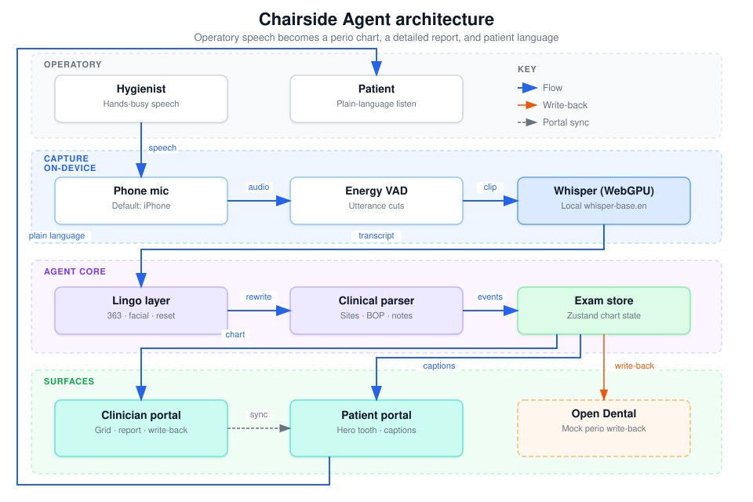
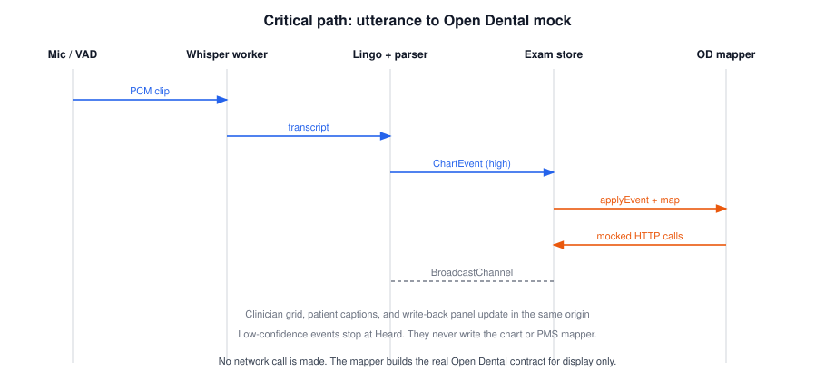

Enterprise and systems architecture
As-built architecture for an offline-first chairside agent that turns hygienist speech into a periodontal chart, patient-plain language, and mocked Open Dental write-back.
Contents
MolarMind is a single-origin browser application. Capture, parse, chart, translate, and PMS preview all run in the clinician tab. A second tab on the same origin is the patient surface. They share state through BroadcastChannel, not a server.
Speech never leaves the operatory on the critical path. Whisper runs in a Web Worker via Transformers.js. Charting is a deterministic parser. Low-confidence transcripts appear in Heard and do not write the exam or the Open Dental mapper.
Practice-management integration is contracted against the public Open Dental REST API (perioexams, periomeasures, procedurelogs). Today those calls are built and displayed, not sent. That keeps the demo honest about the write-back shape without taking a network or HIPAA dependency.
The driving principle is stage safety and reversibility: boring local tech, a scripted rehearsal path, and a PMS adapter that can later point at a real clinic without rewriting the charting core.
A hands-free agent for the dental operatory. One voice stream serves two people: the hygienist gets a live perio grid and a detailed report; the patient gets plain-language captions, a jaw map, and March-to-today comparison. The business case is engagement, not another silent ceiling-tile cleaning.
The seeded patient is Andrew. Last visit is 12 March 2026. Today’s exam starts empty and fills as speech (or the rehearsal script) arrives. Watch and needs-care teeth, plus a crown on #30 and fillings on #15 and #19, are the demo story.
The system is a browser monolith with two peer windows. Vite serves static assets. There is no application server, no WebSocket hub, and no database process.

Figure 1. System context. Speech stays in the operatory. Chart events fan out to clinician, patient, and the Open Dental mapper.
| Box | Where it runs | Job |
|---|---|---|
| Clinician window | Browser tab, clinician route | Mic, VAD, Whisper host, parser, store, grid, report, write-back panel, rehearsal script |
| Patient window | Browser tab, patient route, same origin | Jaw map, captions, meaning panel, March-to-today slider. Consumes the same Zustand store when it is the same tab; uses the bus when it is a second tab listening to chart-events |
| Architecture window | Browser tab, architecture route | Shows the public SVG. This PDF is the detailed companion. |
| Whisper worker | Web Worker in the clinician tab | Loads whisper-base.en (q8, WebGPU) and transcribes one utterance at a time |
| Open Dental | Not contacted | Contract only. Mapper emits method, path, headers, body, and a mocked 201 or 200 |
Routes are configurable: clinician, patient, and architecture paths come from VITE_* env. Default host and port also come from env. Application code must not hardcode loopback URLs.
| Setting | Value | Why |
|---|---|---|
| VAD threshold | RMS 0.012 | Cuts chairside water and suction better than a hair-trigger |
| Silence to cut | 550 ms | Perio callouts are short phrases |
| Minimum speech | 700 ms | Drops chair clatter |
| Transcribe timeout | 20 s | Hard stop so a stuck worker cannot hang the exam |
| Resample | 16 kHz | Whisper contract |
| Preferred mic | iPhone Continuity, then Shokz, then headset | Operatory: phone on a tray or bone-conduction mic, not the laptop fan |
Device classification is label-based (includes, not regular expressions). Only one tab should Listen. Continuity mics are exclusive and mute when the phone locks.
Parser rules that the architecture treats as load-bearing:
The store holds last visit, current exam, Heard, captions, summary, focus tooth, timeline (0 to 1), and the Open Dental call list. applyChartEvent applies domain rules, then asks the PMS mapper for calls, then publishes UI state. resetExam clears the visit and the mock Open Dental session counters.
Status colors are a product contract: green at or under 3 mm, amber at 4 mm, red at 5 mm and above. History teeth without a today reading show March color until measured.
Base URL and demo keys are env: VITE_OPENDENTAL_API_BASE, developer and customer keys, PatNum, ProvNum. Defaults match Open Dental’s own examples (PatNum 20, ProvNum 3, API host https://api.opendental.com/api/v1).
| Store | Purpose | Lifetime |
|---|---|---|
| src/data/andrew.json | Seed last visit and identity for the demo patient | Repo, versioned. Fictional. |
| Zustand useExamStore | Today’s exam, UI, write-back log | Tab memory. Gone on refresh or Reset chart. |
| Open Dental session module | PerioExamNum, measure ids, procedure dedupe | Module memory. Reset with the exam. |
| Browser cache for Whisper | ONNX weights | Origin cache. Not PHI. |
| BroadcastChannel chairside-events | Fan-out of chart events to same-origin tabs | In flight only. Not durable. |
Exam
patientId, patientName, date
notes[] exam-level (including negatives)
teeth[1..32]
sites[MB,B,DB,ML,L,DL]
pd?, bop?, rec?
mobility?, furcation?
notes[], missing?
ChartEvent
kind: reading | flag | navigation | summary_request
| reset_tooth | reset_all | set_name
tooth?, teeth[], side?, sites[], readings[]
bopSites[], rec?, recSites[]
mobility?, furcation?
note?, notes[], examNotes[]
raw, confidence: high | low
Single writer: the clinician tab’s store after a parsed high-confidence event. Patient UI is a reader. There is no conflict resolver because there is no multi-writer clinic graph.
PMS session consistency: first write of a visit creates one mocked PerioExam. Later surfaces on the same tooth PUT the existing PerioMeasure. That matches Open Dental’s "one SequenceType per tooth per exam" rule.
Demo retention is "until Reset or reload." There is no backup and no region. Production would invert this: durable visit records in a clinic-controlled store, regional residency matching the PMS, and no Whisper weights mixed with PHI.
Internal integration is in-process function calls plus one same-origin bus. External integration is a typed mapper that pretends to be HTTPS.

Figure 2. Critical path. Low-confidence work stops at Heard. High-confidence work updates the exam, then the mapper.
| Hop | Style | Contract |
|---|---|---|
| Mic to VAD | Async audio callback | Float32 frames, 4096-sample ScriptProcessor |
| VAD to Whisper | Async promise, 20 s timeout | PCM + sample rate |
| Transcript to parser | Sync | Raw string in, ChartEvent[] out |
| Parser to store | Sync, via bus publish that also loops local | ChartEvent |
| Store to PMS mapper | Sync, after applyEvent | Exam snapshot + event |
| Store to second tab | Async BroadcastChannel | chart-event messages |
| Future live Open Dental | HTTPS, not yet | Idempotent POST then PUT by measure id |
sequenceDiagram
participant Mic
participant VAD
participant Whisper
participant Parser
participant Store
participant Mapper
participant UI
Mic->VAD: PCM
VAD->Whisper: utterance clip
Whisper->Parser: transcript
Parser->Store: ChartEvent
alt confidence low
Store->UI: Heard only
else confidence high
Store->Store: applyEvent
Store->Mapper: exam + event
Mapper->Store: mocked HTTP calls
Store->UI: grid, captions, write-back
end
None. Anyone with the laptop can open the clinician route and chart Andrew. That is correct for a hackathon demo and wrong for a clinic.
None. There is one role: demo operator. Reset all is gated only by a confirm dialog.
Open Dental demo keys live in .env.example as obvious fakes (DEMODEVKEY / DEMOCUSTKEY). They are painted into the write-back panel so the Authorization header looks real. They must never be replaced with a clinic production pair in a committed file.
| Concern | Target |
|---|---|
| Clinic users | SSO against the practice IdP. No shared laptop password in the app. |
| Open Dental | Authorization: ODFHIR {DeveloperKey}/{CustomerKey} from a secrets manager, injected at runtime, never in git. |
| Browser | No long-lived PHI in localStorage. Session cookie or memory only. |
| Least privilege | Write periomeasures and procedurelogs for one PatNum. No patient search from the chairside client if a BFF can do it. |
Structured console.log prefixes are the current telemetry: [mic], [vad], [stt], [whisper-worker], [clinician]. They are for the operator’s DevTools, not a SIEM.
Heard is the human-visible log of raw transcripts and confidence. The write-back panel is the human-visible log of PMS intent.
Not present. A future BFF should carry a visit id from utterance to PMS response. Do not invent a distributed tracer for a single tab.
None. The operator watches Heard and the write-back panel. Production would page on PMS write failure after the hygienist leaves the room, not on a single low-confidence line.
| Horizon | Order of magnitude | Notes |
|---|---|---|
| Demo laptop, as built | $0 / month incremental | Local Vite, cached Whisper, no PMS traffic |
| Clinic pilot, still local STT | Workstation + IT time | Cost is people and Open Dental API access, not cloud inference |
| Hosted BFF + live OD | Low hundreds USD / month at one to three chairs | Tiny request volume. Do not buy a GPU fleet. |
Top cost drivers later: (1) Open Dental developer program and clinic IT, not compute. (2) If STT moves to a server, GPU or reserved CPU for Whisper. (3) If a hosted model is used for patient copy, token spend. Keep that off the charting path.
Scaling cliffs: BroadcastChannel and in-tab Zustand will not survive ten chairs and a central server. That is a one-way door only if someone starts writing PHI into the SPA. The reversible path is a thin BFF that owns PMS writes while the parser stays local.
| Failure | What the user sees | Blast radius | Recovery |
|---|---|---|---|
| No wifi / CDN cold start | Whisper stays loading | Live mic only | Warm model before the demo. Use rehearsal script. |
| WebGPU missing | Worker error or slow path | Live mic | Rehearsal. Later: WASM CPU fallback if we add it. |
| Wrong or locked iPhone mic | Heard empty, VAD never loud | Live mic | Unlock phone, one Listening tab, Refresh devices. |
| Junk transcript | Heard, amber, no chart write | None to PMS | Speak again or spacebar the script. |
| Low-confidence parse | Heard only | None to chart or PMS | Intended. Do not "helpfully" write. |
| Whisper timeout (20 s) | Heard shows the error | That utterance | Next utterance. Worker stays up unless dispose. |
| Tab refresh | Today’s exam gone | Current visit | Re-seed from Andrew. Rehearse again. No RPO. |
| Second tab Listen | Mic mute / exclusive device | Audio | Only clinician Listen. Patient is display-only. |
| Future live OD 400/404 | Would need an error row in write-back | That measure | Keep chart local. Retry PUT. Never delete the exam because one tooth failed. |
RTO / RPO (demo): RTO is "hit Reset and play the script" (under a minute). RPO is zero durable today-exam by design. Production targets (deferred): RPO near zero for accepted high-confidence writes (local queue). RTO of a chair: another workstation can open the same visit from the BFF.
The rehearsal script is the primary resilience control. Treat it as production-grade for the demo, not as a test toy.
Browser-only. Mock Open Dental. Fictional Andrew. Safe to show in a room with wifi off after Whisper is cached.
Keep the mapper. Add a feature flag that still does not send. Record fixtures from a sandbox Open Dental customer. Expand tests for PUT identity and SkipTooth.
Introduce a small server the clinic owns. The browser posts ChartEvents or already-mapped PMS bodies to the BFF. The BFF holds ODFHIR keys and performs HTTPS. The SPA never sees production keys. This is the first one-way door we should take; it is still reversible if the BFF only writes sandbox PatNums.
One non-production PatNum. Hygienist confirms the write-back panel, then a human taps Send. No auto-send on every pocket. Chart remains source of truth if OD is down.
SSO, visit identity, durable store, audit log, BAA review. Only then discuss auto-send. Dentrix or other PMS adapters plug in beside the Open Dental mapper, they do not replace the parser.
None of these block the current demo. All of them block calling this a clinic system.
Public docs used: PerioExams, PerioMeasures, ProcedureLogs. Auth header: Authorization: ODFHIR {DeveloperKey}/{CustomerKey}.
| Chairside event | Mocked call | Notes |
|---|---|---|
| First high-confidence write of the visit | POST /perioexams | PatNum, ExamDate, ProvNum, Note. 201. Stores PerioExamNum (demo starts at 31). |
| Pocket depths | POST /periomeasures then PUT /periomeasures/{id} | SequenceType Probing. Six surfaces, -1 if unknown. |
| Bleeding on probing | Same, SequenceType BleedSupPlaqCalc | 1 on bleeding sites, 0 on measured quiet sites. |
| Recession | SequenceType GingMargin | Millimetres as surface values. |
| Mobility 0 to 3 | SequenceType Mobility | ToothValue only. Surfaces -1. |
| Furcation 0 to 3 | SequenceType Furcation | Usually Bvalue unless sites named. |
| Exam note ("no bleeding") | PUT /perioexams/{id} | Note overwrites. Create exam first if needed. |
| Reset tooth | SequenceType SkipTooth | ToothValue 1. |
| Note contains crown | POST /procedurelogs | procCode D2740, ProcStatus EC, ToothNum string. |
| Note contains filling or composite | POST /procedurelogs | procCode D2391, ProcStatus EC. |
The clinician panel titled "Open Dental write-back" is the operator view of this map. It shows method, path, URL, headers, request JSON, and a mocked response. Nothing is transmitted.
| BUILD spec | As built | Decision |
|---|---|---|
| FastAPI + WebSocket + faster-whisper | Browser-only Whisper worker | Fewer moving parts |
| Patient Rita Shah | Patient Andrew, March 2026 history | Demo narrative change |
| 3D hero tooth #14 | Photographed upper and lower arches + meaning panel | Readable at distance; 3D remains optional later |
| Mock HTTP POST /mock/opendental/perio | Typed Open Dental REST shapes in the panel | Honest contract |
| Python webrtcvad / Silero | In-tab energy VAD | No native addon |
| Disk persistence of the visit | Memory only | Avoid leftover PHI on a shared laptop |
| Path | Role |
|---|---|
| src/audio/useLiveMic.ts | Capture loop, lingo, publish |
| src/audio/vad.ts | Energy VAD |
| src/audio/stt.ts / whisper.worker.ts | Whisper host and worker |
| src/audio/devices.ts | Mic pick (iPhone, Shokz) |
| src/domain/lingo.ts | Slang and commands |
| src/domain/parser.ts / clinicalParse.ts | ChartEvent extraction |
| src/domain/exam.ts | Apply events, colors, restorations |
| src/domain/translator.ts | Patient captions |
| src/store/examStore.ts | Visit state |
| src/pms/opendental.ts | PMS mapper |
| src/bus/channel.ts | BroadcastChannel |
| src/views/ClinicianView.tsx | Grid, script, write-back |
| src/views/PatientView.tsx | Jaw and meaning |
| src/views/WritebackDrawer.tsx | HTTP-shaped mock log |
| src/data/andrew.json | Seed |
| .env.example | Host, routes, Whisper, OD keys |